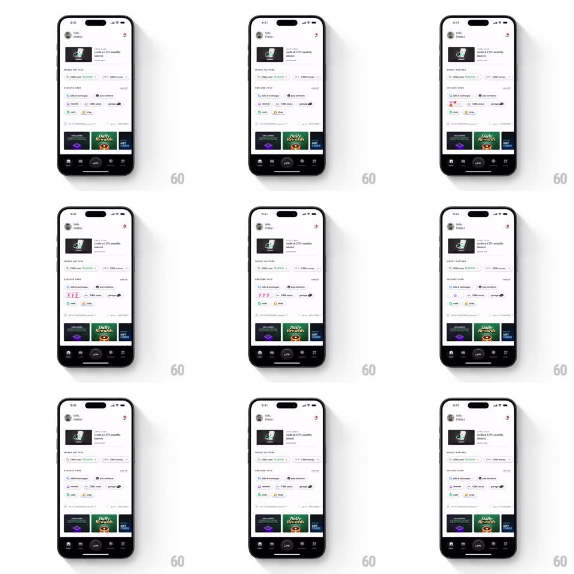

Media
Frame-by-frame

Rebuild this animation 1:1: CRED's rewards teaser - the rewards icon in the home list periodically spins like slot-machine reels, lands on 7-7-7, and settles back, while the rest of the screen stays still.

Rebuild this animation 1:1: CRED's rewards teaser - the rewards icon in the home list periodically spins like slot-machine reels, lands on 7-7-7, and settles back, while the rest of the screen stays still. ## Integration Integration: stack-agnostic spec - springs given as stiffness/damping, timed motions as duration + curve; map every value to your framework and animation library of choice. ## Scene CRED home (light theme): greeting header, card banner, rewards list rows with small circular icons, "Daily Rewards" cards near the bottom, and the tab bar; one rewards row carries the spinning slot element. ## Motion spec Pattern: idle slot-machine spin, ~1.6s cycle. - Idle: the icon rests as the plain rewards glyph for ~4s. - Spin: three mini reels inside the icon blur into a vertical spin - each reel starts 80ms apart (top to bottom) and spins fast (symbols streaking, ~10 symbols/s). - Stop: reels land one at a time (top, middle, bottom, 120ms apart) with a small bounce (spring ~460/16) on 7-7-7 in green. - Hold: the 7-7-7 result holds 800ms, then the icon flips back to the resting glyph (250ms crossfade). - Everything else on screen is static - the animation is confined to the icon. ## Calibration - The spin lives entirely inside the icon's bounds - no layout shift. - Reels decelerate into their stops; none snaps. ## Reduced motion Static icon; no spin cycle. ## Don't miss - The staggered reel stops - top settles first, bottom last. - The result is always 7-7-7 in green; this is a teaser, not a game.